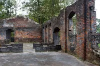

HUYỆN BẮC MÊ
Bắc Mê là một huyện có 2 kiểu địa hình phổ biến đó là miền núi cao khoảng 900 đến 1400m so với mực nước biển, khu thấp hơn có độ cao chỉ 100 đến 500m so với mức nước biển. Có rất nhiều điểm vui chơi, tham quan đáng lưu ý tại đây.
HANG BẮC SƠM

Hang Bách Sơn được phát hiện tại khu rừng nguyên sinh có độ cao trên 200m so với mực nước lòng hồ thủy điện Tuyên Quang, thuộc thôn Bách Sơn, xã Thượng Tân, huyện Bắc Mê (Hà Giang) cách trung tâm huyện khoảng 1h đi thuyền
Hang Bách Sơn nằm trên tuyến du lịch lòng hồ thủy điện Bắc Mê – Nà Hang (Tuyên Quang) – Ba Bể (Bắc Kạn) và nằm ẩn trong khu rừng nguyên sinh của dãy núi đá Bách Sơn. Cửa hang rộng khoảng 20m được che phủ bởi rừng nghiến rậm rạp, lòng hang rộng, sâu, có nhiều nhũ đá với các hình thù kỳ ảo.
CĂNG BẮC MÊ

Di tích lịch sử Căng Bắc Mê được người Pháp chọn xây dựng có địa thế khá lý tưởng ở xã Yên Cường nhằm kiểm soát toàn bộ tuyến giao thông nối 3 tỉnh Hà Giang, Cao Bằng và Tuyên Quang. Căng được xây dựng gồm hệ thống nhà giam, vọng gác, nhà thông tin của thực dân Pháp, trước kia, đây là đồn binh của thực dân Pháp. Năm 1938, khi phong trào cách mạng ở Việt Nam phát triển lên đỉnh cao mới thì thực dân Pháp biến nơi này thành địa điểm giam giữ cán bộ cách mạng, chúng chuyển một số tù nhân chính trị từ Sơn La, Hoả Lò, Phú Thọ…lên đây giam giữ.
Từ năm 1938-1942, thực dân Pháp đã 2 lần đưa tù nhân chính trị đến giam tại đây với số lượng khoảng hơn 300 người, trong đó có các đồng chí Xuân Thuỷ, Lê Giản, Nguyễn Văn Ngọc, Nguyên Hồng . Trong số những tù nhân đó, đa số các đồng chí là đảng viên Đảng Cộng sản Đông Dương. Mặc cho gông cùm khổ cực, khí hậu khắc nghiệt nhưng các đồng chí vẫn tìm cách vận động đấu tranh, đòi cải thiện chế độ sinh hoạt trong Căng, dạy văn hoá, bồi dưỡng cho nhau về tinh thần yêu nước và tư tưởng đấu tranh cách mạng. Các đồng chí còn tranh thủ giác ngộ thanh niên, quần chúng trong và ngoài Căng. Tới cuối năm 1942, lo sợ phong trào cách mạng đang lan rộng ở các tỉnh biên giới và đấu tranh của anh em tù chính trị trong Căng, sợ sự ảnh hưởng của anh em tù nhân đến bà con quanh vùng, thực dân Pháp đã phải giải tán Căng Bắc Mê.
SÔNG GÂM

Sông Gâm chảy qua huyện Bắc Mê được ví như là một dải lụa của tự nhiên ôm lấy miền núi đá. Xung quanh đây là một khung cảnh nên thơ trữ tình với đầy đủ. So với dòng sông khác cũng rất nổi tiếng của Hà Giang đó là sông Nho Quế thì sông Gâm không hiểm trở bằng, mà ngược lại laaij rất yên ả, bằng phẳng, yên giả giữa màu xanh của rừng cây và rêu phong mọc trên núi đá, hình ảnh vốn rất quen thuộc khi đến với Hà Giang. Nhờ sự yên ả của mình mà sông Gâm thường xuyên được chọn để tổ chức những lễ hội đua thuyền hoặc những tour tham quan du lịch trên nước tại Hà Giang, trải nghiệm cực kì thú vị.